Este santuario está disponible desde que llegas a la región de la torre de Gerudo. Lo encuentras al noroeste de la torre.
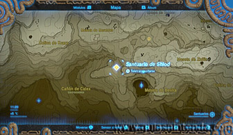
Sin embargo, al llegar a ese lugar solo verás un pedestal en el suelo. Tienes que colocar una Gema luminosa sobre el pedestal para que la entrada aparezca.
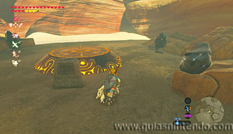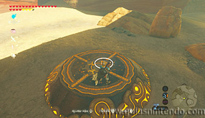
Si no tienes ninguna Gema luminosa puedes destruir las rocas que hay alrededor del pedestal y conseguirás algunas.
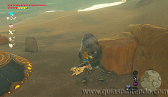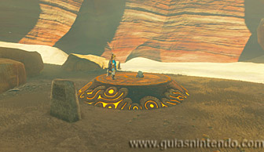
Una vez dentro del santuario verás varios caminos cerrados, pero en la pared de la izquierda según entras, hay un camino que puedes abrir si destruyes unas cajas con bombas.
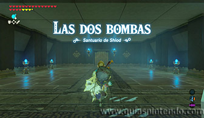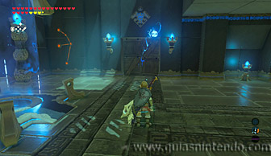
En la siguiente sala verás un bloque en el suelo que sube y baja repentinamente. Te servirá como elevador si pones algo encima, aunque primero puedes coger un cofre que contiene una rupia plateada. Para encontrarlo ve a la parte de atrás de la columna.
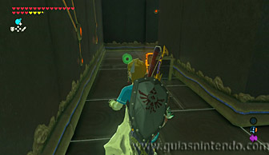
Después coloca una bomba cúbica sobre el bloque para que este la lance hacia el techo. Después tendrás que hacerla explotar justo cuando esté arriba, así activarás un interruptor de cristal que hay arriba tras unas rejas. Al activarlo se abrirá una de las puertas de la primera sala. Regresa allí y pasa por ella.
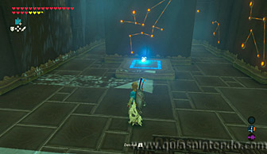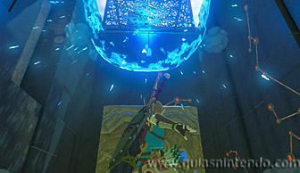
Encontrarás una sala parecida a la anterior, solo que ahora tras la columna hay un interruptor de cristal y el bloque lanzador solo sube si lo activas. Tendrás que colocar una bomba junto al interruptor de cristal sin explotarla. Después cambia el tipo de bomba y deja otra sobre el bloque lanzador.
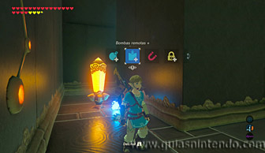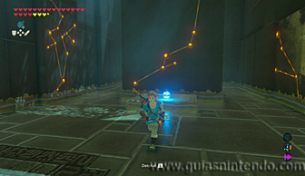
A continuación, tendrás que explotar la primera bomba (cambiando de nuevo de tipo de bomba) y así saldrá lanzada hacia arriba la segunda. Cambia de tipo de bombas y explota la segunda cuando esté arriba. Así activarás el siguiente interruptor y se abrirá la última puerta cerrada en la sala principal.
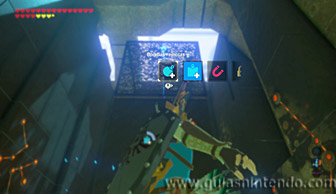
En la última sala verás dos lanzadores a ambos lados de un interruptor de cristal encerrado con rejas. Tienes que colocar dos bombas, una de cada tipo, en los lanzadores. La bomba esférica pasará por encima de la reja cayendo en el otro lanzador, mientras que la cúbica se quedará dentro de las rejas junto al interruptor de cristal.
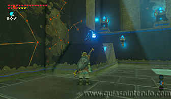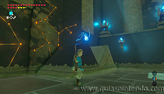
Sin explotar ninguna, colócate sobre una de las baldosas que hay junto a la entrada. Ahora haz explotar la bomba cúbica (cuando la esférica no esté en el aire).
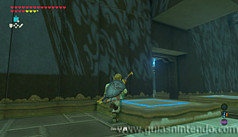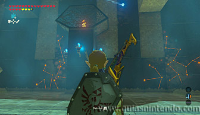
Así te elevarás hacia la salida del santuario, pero la puerta de salida se encontrará cerrada. Baja de la baldosa que se ha elevado y ponte junto a la puerta de salida, después explota la segunda bomba justo cuando pase por encima del interruptor de cristal. Así lograrás abrir la puerta de salida.
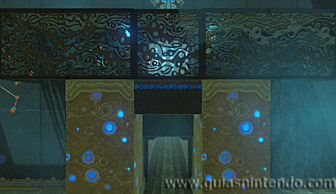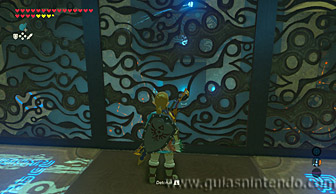
Ahora lo único que te queda por hacer es dirigirte al altar para conseguir el símbolo de valía correspondiente.
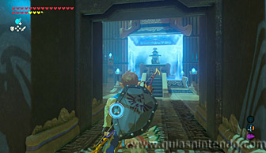